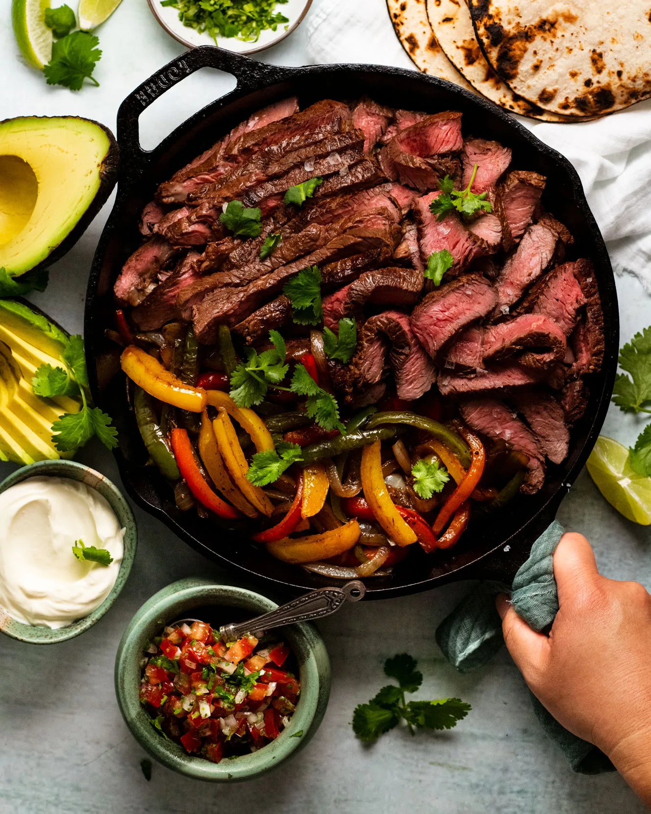

Asada Fajitas
The Very Best Fajitas You Have Ever Had
The absolute BEST Steak Fajitas youve ever had! This is my take on the Tex-Mex steak fajitas. Marinated for hours in lime juice, garlic, and cumin — so good youll never use another recipe again!

How to Make The Best Steak Fajitas
Ingredients
Steps
- STEAK MARINADE: Combine the ingredients for the marinade in a large shallow bowl or zip-top bag. Give it a taste to check for seasonings and adjust to preference. Coat the steak with the marinade and let sit covered in the refrigerator for at least 2-4 hours and ideally overnight (or see notes to freeze.) Remove from the refrigerator 30 minutes prior to grilling.
- COOK: Set a large cast iron skillet or grill pan over high heat and let heat up for a couple of minutes. Add the steak to the pan and fry on each side for about 3-5 minutes or longer if you'd like it more done. Feel for desired firmness. The 3 minutes/side will yield a medium rare doneness. If the pan becomes too hot, reduce the heat to medium-high. Remove the steak from the pan and allow it to rest for several minutes, tented with a piece of foil.
- FAJITA VEGGIES: Add the remaining tablespoon of oil to the pan over high heat, and add in the onions, poblano, and bell peppers. Let the veggies begin to sizzle and toss as necessary, cook for a total of 2-3 minutes or longer if you prefer them softer, season with a pinch of salt and pepper. If your pan is small, cook the veggies in a few batches so they don't steam.
- SLICE: Slice the meat against the grain into thin slices. I like to do so on an angle so the meat slices are tender and thin. Add it back to the veggies if you'd like.
- ASSEMBLE: Serve fajitas in tortillas or on rice bowls topped with your favorite toppings!